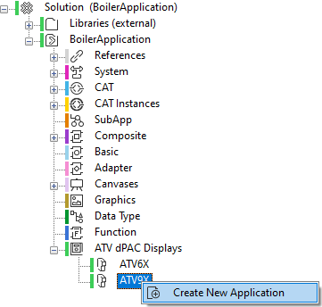
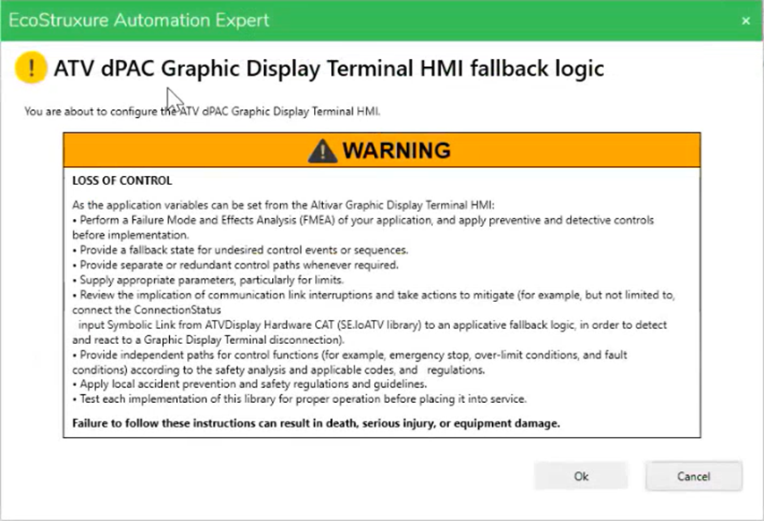
You are about to configure the ATV dPAC Graphic Display Terminal HMI.
| WARNING | |
|---|---|
|
LOSS OF CONTROL
As the application variables can be set from the Altivar Graphic Display Terminal HMI:
Failure to follow these instructions can result in death, serious injury, or equipment damage.
|
|
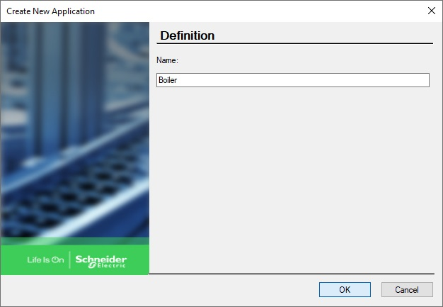
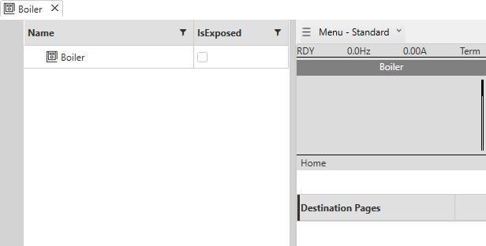
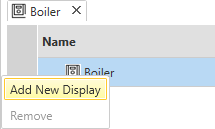
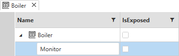
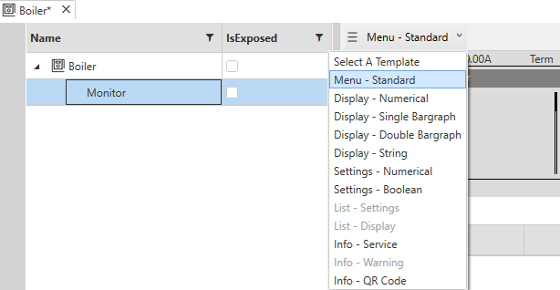
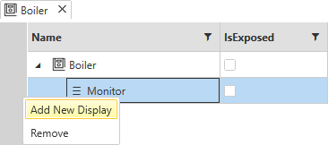
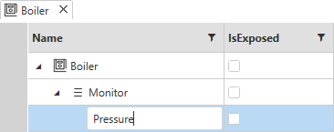
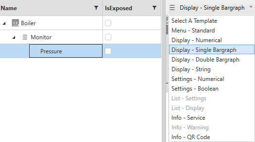
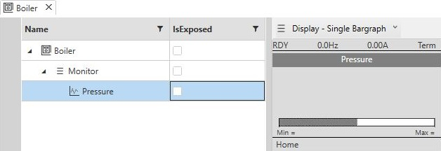
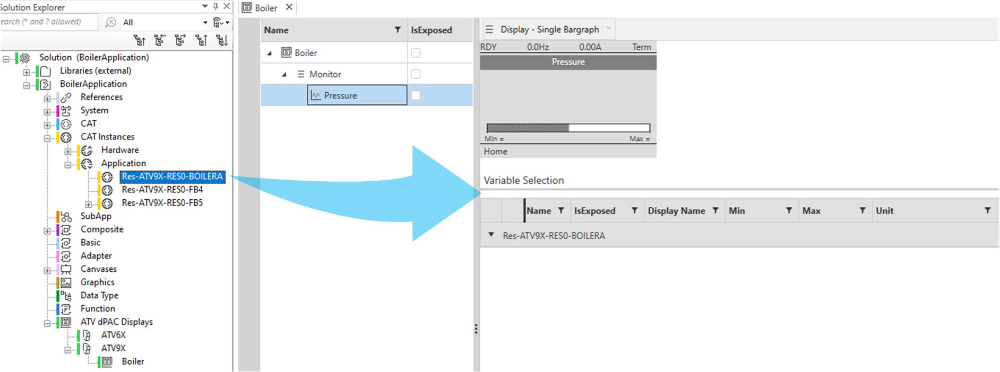
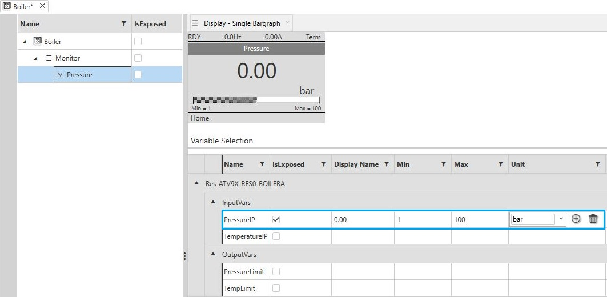
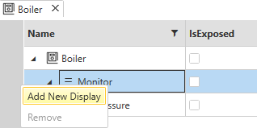
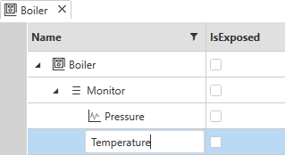
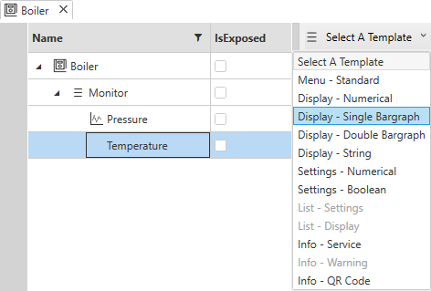
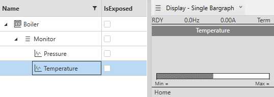
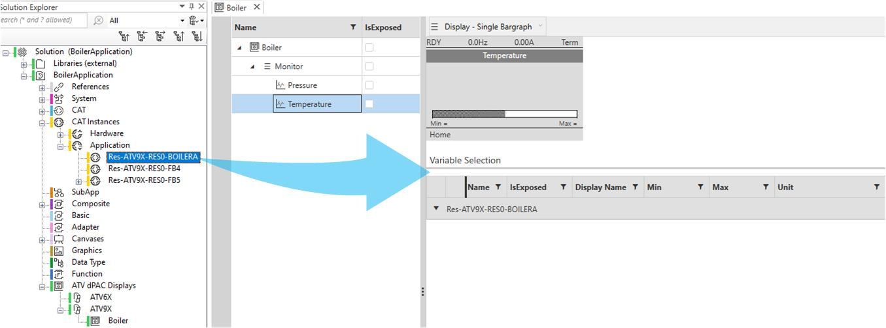
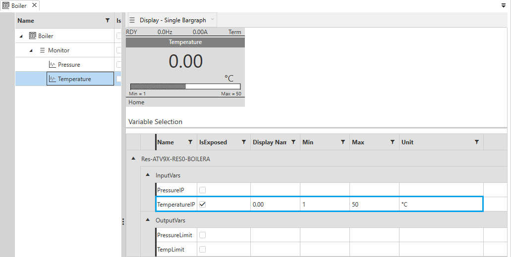
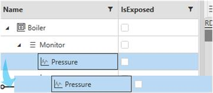
If the Controller Application menu does not appear on the Graphic Display Terminal after you configure security operation, you need to restart the runtime.
To do this in EcoStruxure Automation Expert, follow these steps
Open the Deploy and Diagnostics tab.
Select Device actions.
Select Restart runtime.
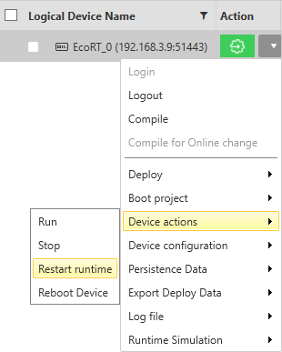
In EcoStruxure Automation Expert 24.1, the Controller Application menu is found on the main menu 9. Controller Application of the Graphic Display Terminal for all ATV drives.
For ATV6•• and ATV9••, the menu is on the main menu 9. Controller Application.
For ATV340, the menu is inside the 6. Communication menu.
NNZ13569.12